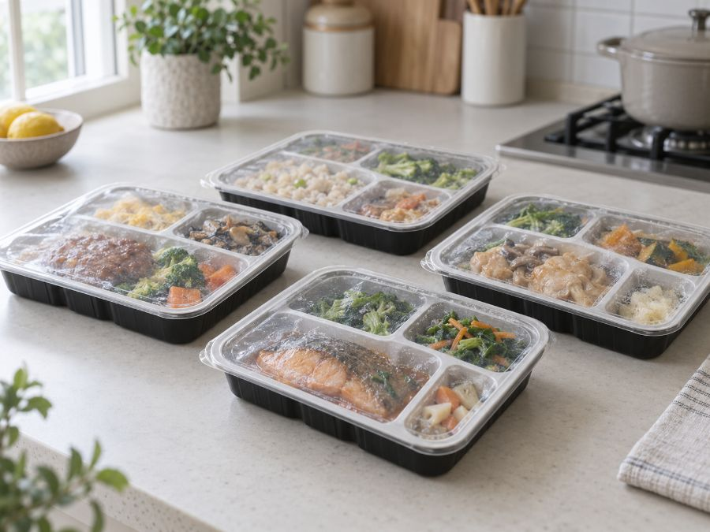

宅配食の選び方
見るべきものは、
4つだけ。冷凍宅配弁当を選ぶ4つの基準
宅配食は数十社あり、レビューを読み比べるだけで疲れます。判断に必要な項目は4つしかありません。順番に絞れば10分で決まります。

先に結論です。①栄養価の条件 → ②冷凍か冷蔵か → ③定期の縛り → ④1食あたりの価格。この順で絞ってください。味の評価は最後です。合わなければやめられるので、最初の判断材料にはなりません。
宅配弁当選びで見る4つの基準
ここで大半が決まります。目的によって見る数値が違います。
| 目的 | 見る数値 | 目安 |
|---|---|---|
| 血圧が気になる | 食塩相当量 | 1食2g以下 |
| 体重を落としたい | エネルギー | 1食300kcal前後 |
| 肌と髪を落としたくない | たんぱく質 | 1食20g以上 |
| 医師から制限が出ている | 指示された項目 | 指示された数値 |
| 家族全員で食べる | 特になし | 品数と食材の産地 |
パッケージや商品ページに必ず記載があります。書いていないサービスは候補から外して構いません。
②冷凍か冷蔵か
意外にここで挫折します。冷凍庫に入らないと届いた日に困ります。1食あたりの容器はそれなりの大きさがあり、10食セットだと冷凍庫の大半を占めます。
冷蔵タイプは解凍が不要で食感も落ちませんが、日持ちしません。週に1回届いて数日で食べきる形です。
判断の詳細は冷凍と冷蔵の違いに。
③定期の縛り
初回が安いサービスは、多くが定期購入の前提です。「初回だけ試したい」なら、都度購入ができるところを選んでください。
継続する自信があるなら定期のほうが安く、送料も無料になることが多い。逆に合わなかった場合の手続きが面倒です。
健康直球便
定期縛りなし定期購入の縛りがなく、必要なときだけ頼めるのが最大の利点です。糖質・カロリー調整食、たんぱく・塩分調整食、消化にやさしい食、やわらか食、ムース食まで揃っています。150種類以上から選べて、2回目以降は1セット500円引き。
セットを見る ＞解約の条件は解約と休止のページにまとめています。
④1食あたりの価格
比較するときは送料を含めた総額を食数で割ってください。本体価格だけ見ると順位が変わります。
| 価格帯 | 目安 | どんなサービスか |
|---|---|---|
| 500円台 | 安い | 冷凍・シンプルな構成 |
| 600〜800円 | 標準 | 栄養価管理あり。選択肢が最も多い |
| 900円〜 | 高い | 無添加・国産中心・冷蔵 |
実額の比較は価格の比較に。
味は最後に判断する
味の好みは人によって違うので、レビューを読んでも自分に合うかは分かりません。上の4項目で2社に絞って、両方1回頼むのが最短です。数千円で結論が出ます。
シェフの無添つくりおき
初回26%OFF化学調味料と保存料を使わない手作りの惣菜を週替わりで届けるサービス。食材の82%が国産で、中国産は不使用。専属の管理栄養士が全メニューを設計しています。1回の配送で30〜70品目の食材が入るため、自炊では揃えにくい品数になります。冷蔵なので解凍が不要です。
初回26%OFFの内容を見る ＞宅配弁当のタイヘイ
定期は送料無料シリーズ累計5,300万食。専門医が監修し、管理栄養士が献立を作成しています。ヘルシー御膳は1食200kcal、食塩相当量2.2g以下。骨取り魚を使うなど食べやすさへの配慮もあります。管理栄養士に相談できる窓口があるのが特徴です。
メニューと価格を見る ＞絞り込みの実例
4つの基準を順に当てはめると、どう絞られるかを示します。
| 条件 | 残る選択肢 |
|---|---|
| 出発点 | 9社すべて |
| ①医師の指示あり（塩分2g以下） | メディカルフードサービス／タイヘイ／メディミール／健康直球便 |
| ②冷凍庫に空きがない | （冷蔵は該当なし）→ 食数を5食に減らす |
| ③1回だけ試したい | 健康直球便／メディミール |
| ④1食700円以内 | 2社とも該当 |
4つ目まで進めば、たいてい2社以内に絞れます。ここまで10分。レビューを読み比べる時間は不要です。
基準にしなくていいもの
判断材料になりそうで、実はならないものがあります。
- 知名度。広告量と品質は別です。制限食の専門企業ほど知名度は低い傾向があります
- ランキング順位。掲載順は報酬額で決まっていることがあります。数値で比べてください
- 味のレビュー。普段の食事の濃さが人によって違うため、参考になりません
- 品目数。「30品目」と書いてあっても、1品あたりの量が少なければ栄養は入りません
- 芸能人の起用。商品の中身とは無関係です
レビューの読み方はレビューの読み方にまとめました。
目的から逆算する
比較して選ぶ